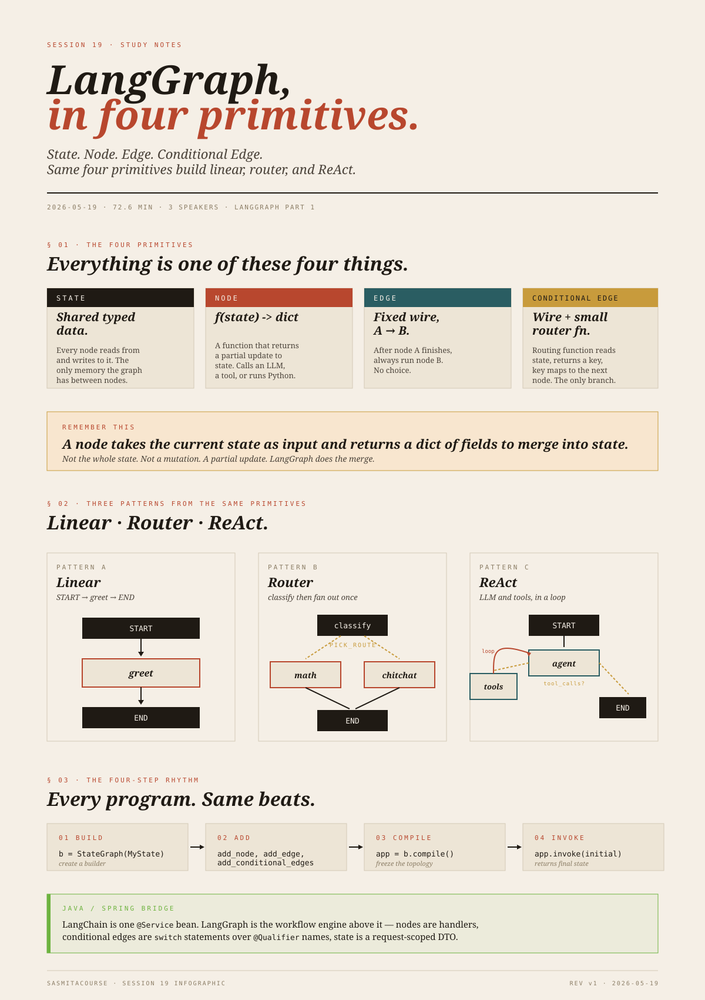

State, nodes,and edges.
Move from one LangChain agent to many that collaborate. Four primitives, three patterns, one rhythm.
bind_tools. That gives you one agent. Session 19 starts the LangGraph week. LangGraph is the orchestration layer above LangChain: when you have five, ten, or fifty agents that need to talk to each other, share intermediate results, and route work conditionally, you draw the system as a graph and let LangGraph run it. Today is the first class — pure mechanics. Next class extends to a customer-service router, then reflection, then human-in-the-loop, then a coding-assistant end-to-end build.

LangChain builds one agent. LangGraph orchestrates many.
LangChain and LangGraph are separate Python packages. They sit at different levels:
| LangChain | LangGraph | |
|---|---|---|
| Job | Build a single agent: bind an LLM to a prompt, a memory, and a tool list. | Orchestrate multiple agents (or nodes) — decide who runs when, what they share, when to loop, when to stop. |
| Mental model | One callable: agent.invoke(question). | A graph: nodes do work, edges decide what runs next. |
| You reach for it when | You need a chatbot, a single tool-using assistant, a RAG chain. | You need branching, parallel work, multi-step plans, human approval steps, or several specialised agents collaborating. |
Think of LangChain as a single Spring @Service bean — one class doing one well-scoped job. LangGraph is the service layer + dispatcher above it: a graph of service calls where the next call depends on the previous result. If LangChain is the bean, LangGraph is the workflow engine — Spring Cloud Data Flow or a Camel route, with explicit nodes and edges.
LangGraph's graph is a directed graph that may cycle. Cycles matter: a ReAct agent loops “LLM → tool → LLM → tool → … → end” until the LLM stops asking for tools. Linear DAG engines can't express that loop.
Four primitives. That's it.
Everything in LangGraph is one of these four things:
| What it is | What it does | |
|---|---|---|
| State | A typed shared object — a TypedDict or a Pydantic model. | Holds the data every node reads from and writes to. The only memory the graph has between nodes. |
| Node | A Python function (or callable). | Receives the current state, does some work (call an LLM, call a tool, run a function), and returns a partial update to state. |
| Edge | A fixed wire between two nodes. | “After node A finishes, always run node B.” |
| Conditional Edge | A wire plus a small routing function. | “After node A finishes, look at state, pick one of these named downstream nodes.” The only way to branch. |
Two reserved markers START and END mark where execution enters and exits the graph. They're not nodes — you don't add them with add_node, only with add_edge.
State is a request-scoped DTO that every handler in the chain can read and mutate. Nodes are the handlers. Plain edges are like a hard-wired next() call; conditional edges are a switch whose case keys are the names of the next handlers.
The node contract
This is the rule that makes everything else work. Memorise it:
A node takes the current state as input and returns a dict of fields to merge into state.
It does not return the whole state, and it does not mutate state in place. It returns just the keys it wants to update. LangGraph merges those keys into the running state before the next node runs.
dict, not the state class, and (b) for fields with a reducer (we'll see this with MessagesState), the merge isn't overwrite — it's a list-append.
Linear graph — one node, fixed path
The simplest possible graph. State has two fields. One node calls an LLM. START → greet → END. From langgraph_beginner_tutorial.py Example A.
from typing import TypedDict
from langchain_core.messages import HumanMessage, SystemMessage
from langchain_openai import ChatOpenAI
from langgraph.graph import START, END, StateGraph
llm = ChatOpenAI(model="gpt-4o-mini", temperature=0.2)
class GreetState(TypedDict):
topic: str
reply: str
def greet_node(state: GreetState) -> dict:
msg = llm.invoke([
SystemMessage(content="You are a friendly tutor. Reply in 2 short sentences."),
HumanMessage(content=f"Explain briefly: {state['topic']}"),
])
return {"reply": msg.content}
builder = StateGraph(GreetState)
builder.add_node("greet", greet_node)
builder.add_edge(START, "greet")
builder.add_edge("greet", END)
linear_app = builder.compile()
out = linear_app.invoke({"topic": "what is a LangGraph node", "reply": ""})
print(out["reply"])
Read it in four beats:
- Define the state schema.
GreetStateis aTypedDictwith two string fields. This is the contract: every node knows it can readstate['topic']and writestate['reply']. - Define the node.
greet_nodereadsstate['topic'], calls the LLM with a 2-sentence system prompt, returns{"reply": msg.content}. Note the return type isdict, notGreetState— partial update, not full state. - Build the graph.
StateGraph(GreetState)creates the builder;add_noderegisters the function under the name"greet"; twoadd_edgecalls wireSTART → "greet" → END. - Compile and invoke.
builder.compile()returns the runnable graph.invoke(...)takes the initial state and returns the final state.
state.topic vs state["topic"]. In the transcript: “state.topic also will work, or state of topic.” With a TypedDict (what this example uses), only the subscript form state["topic"] works — TypedDict instances are plain dicts at runtime, with no attribute access. Dot access works only when state is a Pydantic BaseModel or a @dataclass. The tutorial code uses TypedDict throughout, so state["topic"] is the right form.
What happens at invoke
You pass an initial dict. The keys you fill in are the initial state; any key you leave unset (e.g. reply: "") is what the graph will fill in. invoke runs the graph and returns the final merged state:
{"topic": "what is a LangGraph node",
"reply": "<the LLM's 2-sentence answer>"}
The build-then-compile-then-invoke rhythm is the same shape as a Spring ApplicationContext: you describe beans during configuration, refresh() finalises the context, and from then on you call into the context. compile() is refresh(); invoke() is calling the entry point.
Router pattern — conditional edges
Now we add branching. The graph classifies the user's question as either math or chit-chat, then dispatches to a different node for each. From langgraph_beginner_tutorial.py Example B.
State has three fields
class RouterState(TypedDict):
question: str # the user's input
route: str # filled in by the classifier — "math" or "chitchat"
answer: str # filled in by whichever expert ran
question is what the user supplies. route is intermediate scratch — the classifier writes it, the routing function reads it. answer is the final output.
Three working nodes plus one routing function
def classify(state: RouterState) -> dict:
text = state["question"].lower()
if any(w in text for w in ("+", "plus", "times", "multiply", "what is", "calculate")):
return {"route": "math"}
return {"route": "chitchat"}
def math_bot(state: RouterState) -> dict:
r = llm.invoke([HumanMessage(
content=f"Solve or explain briefly (show reasoning): {state['question']}")])
return {"answer": r.content}
def chitchat_bot(state: RouterState) -> dict:
r = llm.invoke([HumanMessage(
content=f"Reply helpfully and briefly: {state['question']}")])
return {"answer": r.content}
def pick_route(state: RouterState) -> Literal["math", "chitchat"]:
return state["route"]
classify is a regular node — it does work and updates state. pick_route is not a node — it's the small routing function that a conditional edge consults. Conceptually:
classifydecides what the next step should be and records the decision in state.pick_routereads the decision and returns the name of the next node to run.
Wiring it up
rb = StateGraph(RouterState)
rb.add_node("classify", classify)
rb.add_node("math", math_bot)
rb.add_node("chitchat", chitchat_bot)
rb.add_edge(START, "classify")
rb.add_conditional_edges(
"classify",
pick_route,
{"math": "math", "chitchat": "chitchat"},
)
rb.add_edge("math", END)
rb.add_edge("chitchat", END)
router_app = rb.compile()
print(router_app.invoke({"question": "What is 12 * 7?",
"route": "", "answer": ""}))
print(router_app.invoke({"question": "Say hi in one sentence",
"route": "", "answer": ""}))
Reading add_conditional_edges
This call is doing three things:
- Source:
"classify"— after this node finishes, the conditional edge fires. - Routing function:
pick_route— called with current state, returns a string key. - Mapping:
{"math": "math", "chitchat": "chitchat"}— maps the returned key to the actual downstream node name.
The mapping looks redundant when the key and node name are the same string. They don't have to be. You could have pick_route return "easy" / "hard" and map them to "math" / "reasoning_model" — the mapping is the indirection layer.
This is exactly Spring's @Qualifier indirection. The routing function returns a logical name; the mapping resolves the logical name to a concrete bean. You can change which bean handles “math” without touching pick_route.
A common student question — answered
One student asked: “If classify already returns 'math' or 'chitchat', why do we still need a conditional edge? Can't classify just route directly?”
The answer: a node updates state; it does not direct execution. Updating state["route"] to "math" is just writing a string into a field. Something still has to read that string and decide where the runtime goes next. That “something” is the conditional edge plus its routing function. The graph engine deliberately keeps these two concerns separate — node = data transformation, edge = control flow — because it lets you reason about each independently.
Command(...) return value that lets a node both update state and direct routing in one go. The lecturer mentioned this but recommended sticking with add_conditional_edges because the separation is clearer to read. Both forms are correct.
What “router” means as a pattern
This is the router pattern (sometimes “supervisor pattern”): one classifier at the top picks one of N specialists below, then the specialist answers and the graph ends. The classifier doesn't have to be a hand-written rule like classify above — it's commonly an LLM with a prompt like “categorise this question as math, code, weather, or chitchat.” The mechanics are identical.
Every program. Same four beats.
Every LangGraph program follows the same four-step rhythm:
| Step | Code | Meaning |
|---|---|---|
| Build | b = StateGraph(MyState) | Create a builder with a state schema. |
| Add | b.add_node(...), b.add_edge(...), b.add_conditional_edges(...) | Register nodes and wire them up. |
| Compile | app = b.compile() | Freeze the topology, validate it, return a runnable. |
| Invoke | app.invoke(initial_state) | Run the graph with an initial state; get the final state back. |
Once compiled, an app is reusable and stateless — every invoke starts from the initial state you pass in. Persistence between invocations needs a checkpointer (a later session).
A Spring bean is usually long-lived: instantiated at startup, kept around. A compiled LangGraph app is also long-lived, but each invoke is stateless by default — there's no “session” inside the graph unless you explicitly add a checkpointer. Don't carry over the assumption that the app remembers anything across calls.
ReAct loop — LLM + tools, manually wired
The third pattern is ReAct — Reasoning + Acting — from Yao et al., “ReAct: Synergizing Reasoning and Acting in Language Models” (ICLR 2023; arXiv:2210.03629). The shape: an LLM that may call a tool, observe the tool's result, reason again, possibly call another tool, and so on until it produces a final answer without a tool call.
LangGraph ships a one-line helper for this — create_react_agent — that we'll cover next class. This section deliberately builds it from primitives so you can see what create_react_agent packages up. From langgraph_beginner_tutorial.py Example C.
Two tools
from langchain_core.tools import tool
@tool
def fake_weather(city: str) -> str:
"""Get pretend weather for a city (demo only)."""
return f"Weather in {city}: 22°C, partly cloudy (demo data)."
@tool
def add_numbers(a: int, b: int) -> int:
"""Add two integers."""
return a + b
The @tool decorator turns a Python function into a LangChain Tool: it wraps the function's name, docstring, and type-annotated arguments into the JSON-schema the LLM needs to know what's callable. The docstring matters — it's what the LLM reads to decide when to call this tool.
Bind the tools to the LLM
tools = [fake_weather, add_numbers]
llm_tools = llm.bind_tools(tools)
bind_tools attaches the tool schemas to every request this LLM makes. The LLM now knows that when it generates a response, it may, instead of (or in addition to) text, emit a structured tool call — {"name": "fake_weather", "args": {"city": "Paris"}} — which the framework will execute.
State: MessagesState
For chat-style agents, LangGraph provides a prebuilt state class: MessagesState. It has one field, messages: list, and — crucially — a reducer attached to that field so that returning {"messages": [new_msg]} from a node appends to the list rather than overwriting it.
from langgraph.graph.message import MessagesState
messages special. In the transcript: “This is basically default, uh, state.” Worth saying out loud: MessagesState is not just a TypedDict with one field — its messages field has a built-in reducer (add_messages). When two nodes both return {"messages": [...]}, LangGraph appends instead of overwriting. That's why the conversation history keeps growing across LLM-and-tool turns instead of being clobbered by each node.
The two nodes
from langgraph.prebuilt import ToolNode
def agent_node(state: MessagesState) -> dict:
resp = llm_tools.invoke(state["messages"])
return {"messages": [resp]}
tool_node = ToolNode(tools)
agent_node is the LLM step: read the conversation so far, call the tool-bound LLM, append the response (which may be plain text or a tool call). ToolNode is a prebuilt node from langgraph.prebuilt — give it your tool list and it knows how to take an AIMessage containing tool calls, execute each tool, and append a ToolMessage per tool call back into messages.
The routing function
from langchain_core.messages import AIMessage
def should_use_tools(state: MessagesState) -> Literal["tools", "__end__"]:
last = state["messages"][-1]
if isinstance(last, AIMessage) and last.tool_calls:
return "tools"
return END
Pulled apart: take the last message. If it's an AIMessage and it has tool_calls, the LLM is asking us to run a tool — route to the "tools" node. Otherwise the LLM is done — route to END.
tool_calls attribute is non-empty). It's not the content of the message that triggers tools — it's the LLM's structured signal that it wants a tool run. Sending a plain text containing the word “tool” does not route to tools; the LLM has to actually emit a tool_calls payload.
Wire it as a cycle
react_b = StateGraph(MessagesState)
react_b.add_node("agent", agent_node)
react_b.add_node("tools", tool_node)
react_b.add_edge(START, "agent")
react_b.add_conditional_edges(
"agent", should_use_tools, {"tools": "tools", END: END}
)
react_b.add_edge("tools", "agent") # ← the loop
react_app = react_b.compile()
The crucial edge is the last one: tools → agent. After the tool runs, control comes back to the LLM so it can read the tool's output and decide what to do next. This is the loop. The graph runs as long as the LLM keeps emitting tool_calls; it terminates the moment the LLM produces a final response with no tool calls.
A worked run
result = react_app.invoke({
"messages": [HumanMessage(
content="What is 41 + 9? Then tell me the weather in Paris (use tools).")]
})
for m in result["messages"]:
print(m.type, ":", getattr(m, "content", m))
What happens, step by step:
agent_noderuns. LLM sees the prompt, decides both questions need tools. It emits two tool calls:add_numbers(41, 9)andfake_weather("Paris"). Returned message hastool_callspopulated.should_use_toolssees the tool calls → routes to"tools".ToolNoderuns both tools, appends twoToolMessages with"50"and"Weather in Paris: 22°C, partly cloudy (demo data)."- Edge
tools → agentfires.agent_noderuns again. LLM now has the tool results in context. It produces a plain text response: “41 + 9 is 50, and the weather in Paris is currently 22°C, partly cloudy (demo data).” No tool calls. should_use_toolssees no tool calls → routes toEND. Graph stops.
The student's follow-up question — “do I have to say 'use tools' in the prompt?” — was answered by removing those two words and asking “what's the weather in Paris?”: the LLM still called the weather tool, because it knew it had no way to answer otherwise. The “use tools” phrase isn't a magic incantation; the LLM decides per turn whether tool use is needed.
The ReAct loop terminates not by counting turns, but by the LLM choosing not to call a tool. If the LLM keeps asking for tools, the loop keeps spinning. Production ReAct agents add an explicit max-iterations guard for this reason.
Router vs ReAct, side by side
| Router (Example B) | ReAct (Example C) | |
|---|---|---|
| Branching point | Once — the classifier picks one specialist. | Repeatedly — every LLM turn re-decides tool-or-end. |
| Routing function inspects | A field the previous node wrote (state["route"]). | The structure of the last LLM message (last.tool_calls). |
| # of LLM calls | Usually one specialist call. | One per “reason” step — can be many. |
| Cycles? | None. Always exits in one hop. | Yes — tools → agent is the load-bearing edge. |
| State shape | Custom TypedDict with named fields per intent. | MessagesState — a growing list of chat messages. |
| When to reach for it | You have a fixed set of specialised paths and want to pick one. | You have a set of tools and you want the LLM to decide if and when to use them, iteratively. |
The lecturer's instinct that “router has ReAct in it” isn't quite right. They share the primitive (conditional edge), but the shapes differ: router fans out once, ReAct loops. The student who asked this in class was right to push on the distinction.
What's coming next (not in today's class)
The transcript names several things the lecturer plans to cover later. Listing them here as a roadmap, not material for today:
- Reflection pattern (draft → critique → revise loop). Example D in
langgraph_beginner_tutorial.py. Mentioned as “we will discuss tomorrow.” Not walked through in this class. create_react_agent(the prebuilt helper that wraps Example C in one call). Example E in the tutorial. Mentioned as “next class I will update the code… much easier.”- Conditional-edge deep dive — customer-service router. The file
Langgraph/customer_service_ConditionalEdgenotebook (1).pyexists in the folder. Lecturer: “we have a separate notebook also, detail. I will show you one more example where customer care support team will decide which ticket, where to route.” Deferred to next class. - Coding-assistant agent with human-in-the-loop and persistent memory. Files
Langgraph/coding_assistant_HumanIntheLoop_PersistentMemorypnotebook.pyand the larger notebook. Lecturer: “we will build a coding agent which will automatically write code, take your feedback, rewrite the code based on your feedback until you approve… maybe Monday or Tuesday.” End-to-end project for a later session. - Subgraphs for larger systems. Mentioned in the tutorial's recap, not in class.
Per the user's instruction — include only content discussed in the session from the Langgraph folder — none of the above appears in the body of these notes. The forward-reference list is here so the reader knows where the lecturer is heading.
Four primitives. Three patterns. One rhythm.
LangGraph is an orchestrator: it runs a graph whose nodes do work and whose edges decide what runs next. The four primitives — State (shared typed data), Node (a function that returns a partial update), Edge (fixed wire), Conditional Edge (wire + routing function) — compose into every pattern you'll see.
Three patterns from one set of primitives:
- Linear (
START → node → END) — no branching, just demonstrates the rhythm. - Router — classify, then
add_conditional_edgesfans out once to a chosen specialist. - ReAct — LLM +
ToolNode+ a conditional edge after the LLM that loops back through tools until the LLM stops asking for them.
The rhythm of every program: build → add → compile → invoke.
Next class continues with the conditional-edge customer-service example, the reflection pattern, and the create_react_agent shortcut.
Glossary
- State
- The shared typed data structure every node reads from and writes to. Defined as a
TypedDictor PydanticBaseModel. The graph has no other memory. - Node
- A function
f(state) -> dictthat returns a partial update to state. May call an LLM, run a tool, transform data, or anything else Python can do. - Edge
- A fixed unconditional next-step wire between two nodes.
- Conditional Edge
- An edge with a routing function: after the source node finishes, the routing function inspects state and returns a key that names the next node. Registered with
add_conditional_edges(source, routing_fn, mapping). - Reducer
- A merge function attached to a state field.
MessagesState.messageshas theadd_messagesreducer, which appends rather than overwrites. Custom state fields can declare reducers usingAnnotated[list, add_messages](or similar). - START / END
- Reserved markers — entry and exit of the graph. Not nodes; you don't
add_nodethem. - StateGraph
- The graph builder.
StateGraph(MyState).add_node(...).add_edge(...).compile(). - MessagesState
- A prebuilt state class with one reducer-equipped field
messages: list. Use it for chat/tool-using agents. - ToolNode
- A prebuilt node from
langgraph.prebuiltthat executes any tool calls in the most recentAIMessageand appends the resultingToolMessages tomessages. - @tool
- A LangChain decorator that turns a Python function (with type hints and a docstring) into a callable Tool the LLM can invoke.
- bind_tools
- LLM method that attaches a tool list (as JSON schemas) so every request includes the option of returning a structured tool call.
- Router pattern
- Classify the input, dispatch to one of N specialised nodes, end. One-shot branching.
- ReAct pattern
- Reason → act (tool call) → observe → reason again, until the LLM produces a final answer with no further tool call. From Yao et al. (ICLR 2023).
- Reflection pattern
- Draft → critique → revise loop. Forward-referenced; covered next class.